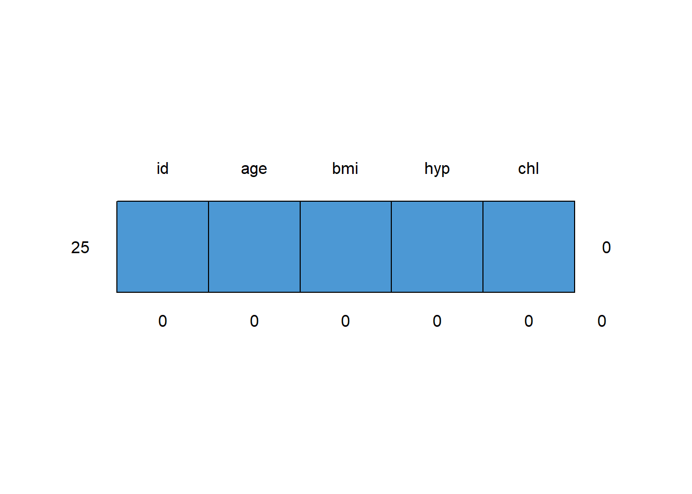
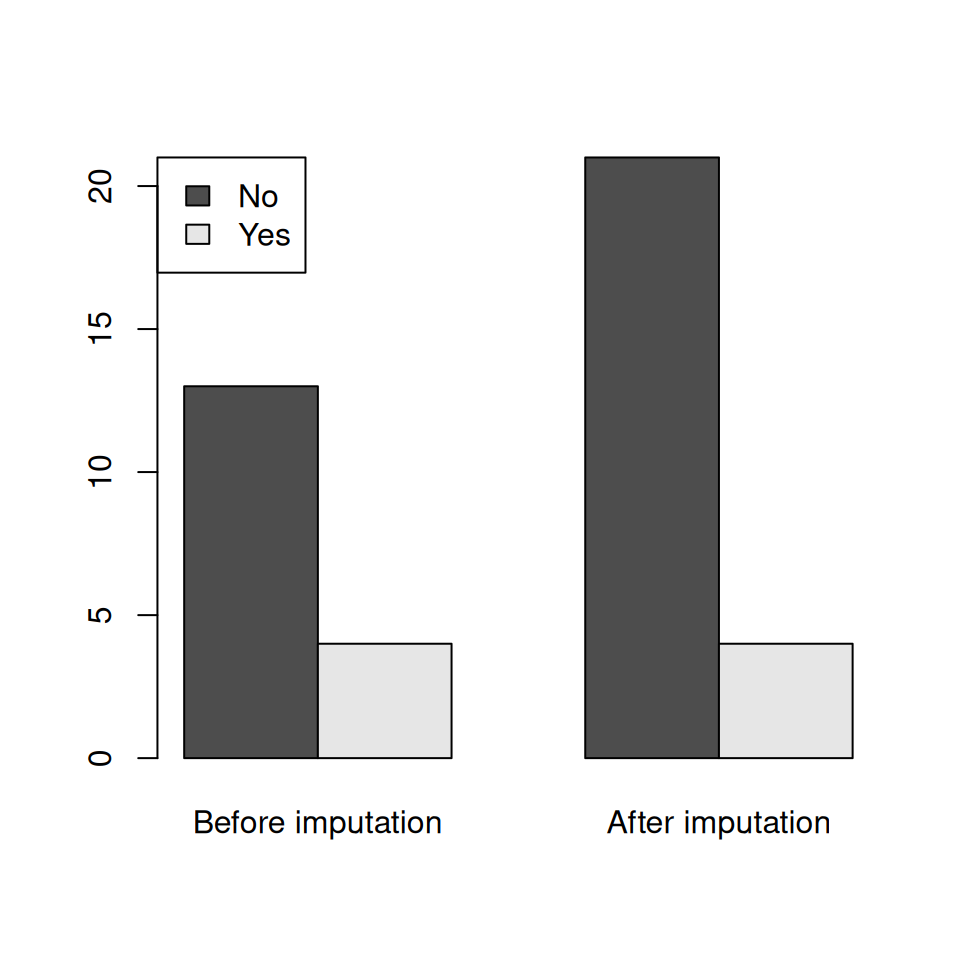
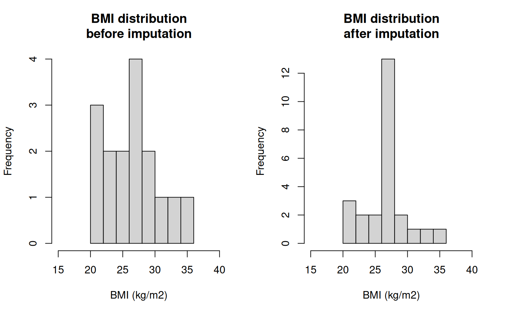
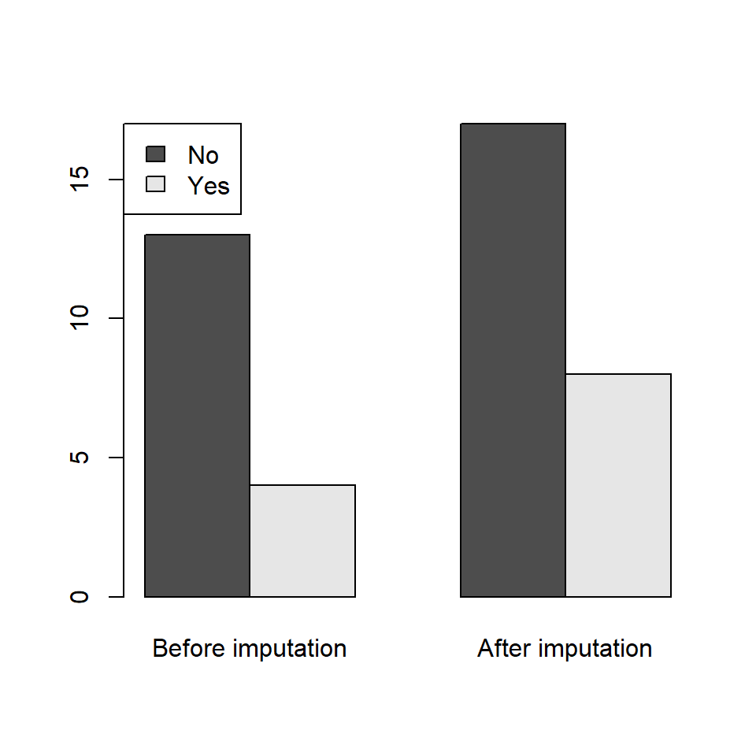
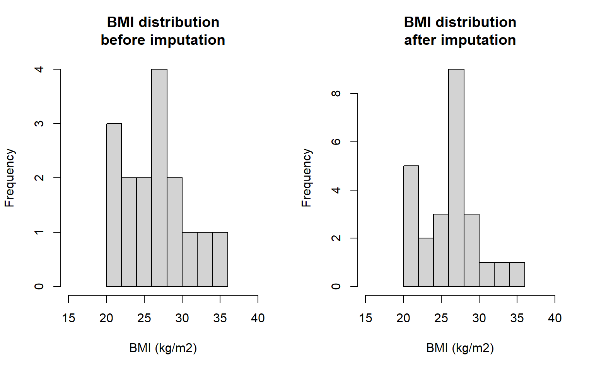
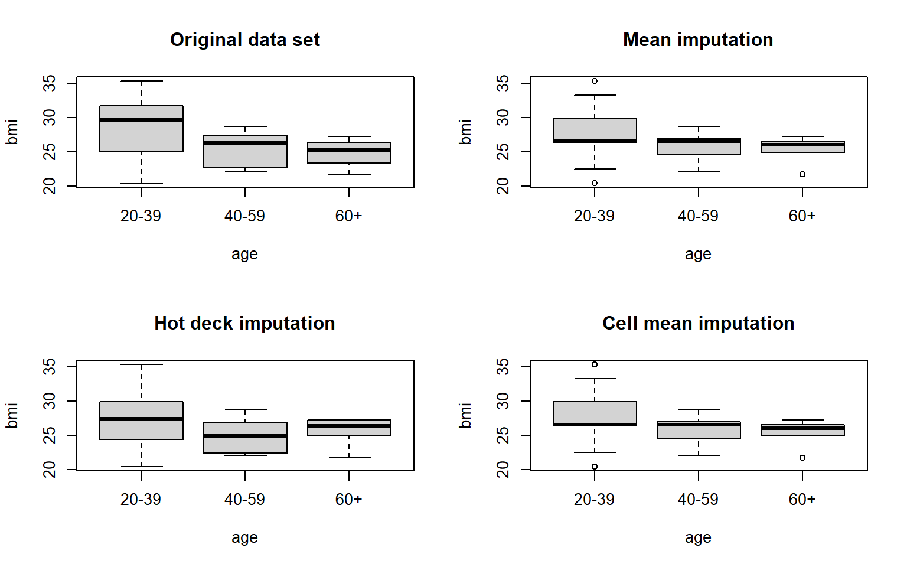
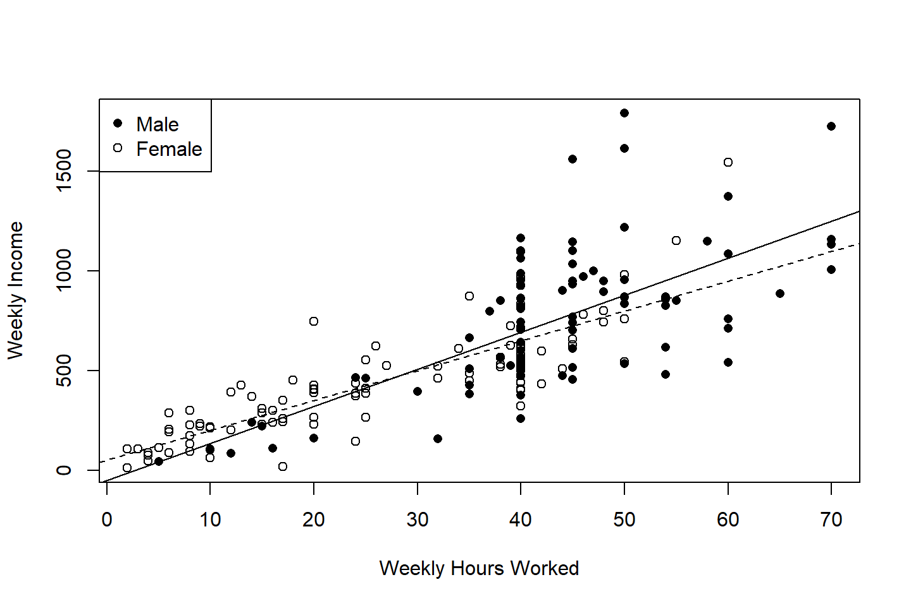
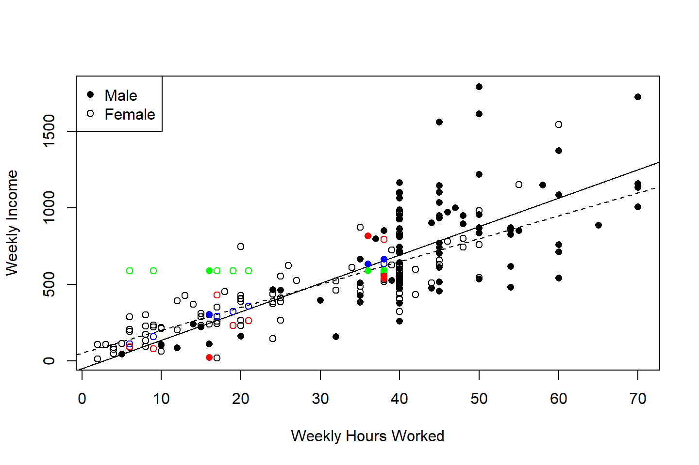

9 Imputation
In the previous chapter we saw methods of dealing with unit non-response: i.e. we have units that are selected, but we collect no data at all from them.
Another common type of non-response is where a unit does not provide all the information requested: certain data items are therefore missing. This is called item non-response.
We could just do a complete case analysis - in other words throw all of the data away for such units, and treat them as unit non-responders with zero weight. This wastes data and effort, and misses the opportunity to use the data we have collected. It also leads to a loss of precision due to reduced sample size.
An alternative option is imputation: this means that we fill in (i.e. invent) the missing data using some kind of model.
All such models involve untestable assumptions, and we run the same risks as when we make weight adjustments for non-response. There is a substantial risk of bias in our estimates whatever we do: leaving these units fully out of our analysis risks missing an important part of the population. Incorrectly guessing their responses is of course also a risk if we do so incorrectly. We may be introducing bias in doing so.
Whatever we do our imputation must:
- be minimal - we should not impute more than a few per cent of our data;
- never be done on our key variables - if we’re trying to find out about political views then the last thing we should be doing is guessing them. Less significant variables, e.g. household income, will have a lesser effect on our estimates;
- be documented - we should always know how much imputation has been done, on which variables, and most importantly how the imputation was done.
Let’s take as an example the SURF income survey synthetic dataset of 200 individuals aged 15-45 from the NZ population. The top 10 rows are:
Let’s remove some data: delete 10 entries at random from each of marital status and income.
set.seed(111)
msurf <- surf
msurf$Marital[sample(nrow(surf),10)] <- NA
msurf$Income[sample(nrow(surf),10)] <- NAMarital variable after
removing 10 values.
| Marital | Freq |
|---|---|
| married | 68 |
| never | 82 |
| other | 20 |
| previously | 20 |
| NA | 10 |
The R package mice provides for multiple imputation methods, and provides some
demonstration datasets and some visualisation tools. However it’s a bit tricky to use,
so we’ll use a simpler function impute().
The mice package can draw a nice picture of the pattern of missingness in the
SURF data, which is a mixture of numeric and categorical variables
## Personid Gender Qualification Age
## Min. : 1.00 Length:200 Length:200 Min. :15.00
## 1st Qu.: 50.75 Class :character Class :character 1st Qu.:22.75
## Median :100.50 Mode :character Mode :character Median :32.00
## Mean :100.50 Mean :30.69
## 3rd Qu.:150.25 3rd Qu.:38.00
## Max. :200.00 Max. :45.00
##
## Hours Income Marital Ethnicity
## Min. : 2.00 Min. : 11.0 Length:200 Length:200
## 1st Qu.:20.00 1st Qu.: 355.2 Class :character Class :character
## Median :40.00 Median : 532.5 Mode :character Mode :character
## Mean :33.71 Mean : 586.9
## 3rd Qu.:45.00 3rd Qu.: 819.8
## Max. :70.00 Max. :1789.0
## NA's :10
## Personid Gender Qualification Age Hours Ethnicity Income Marital
## 181 1 1 1 1 1 1 1 1 0
## 9 1 1 1 1 1 1 1 0 1
## 9 1 1 1 1 1 1 0 1 1
## 1 1 1 1 1 1 1 0 0 2
## 0 0 0 0 0 0 10 10 20An example dataset supplied with mice is nhanes, and is a tiny
extract of 25 rows from the US National Health and Nutrition Examination Survey
(NHANES). Note all variables are stored numeric, though the age and hyp column
are actually categorical.
We’ll create a copy of the dataset, call it mnhanes and recode the factor levels.
mnhanes <- mice::nhanes
mnhanes$age <- factor(mnhanes$age)
mnhanes$hyp <- factor(mnhanes$hyp)
levels(mnhanes$age) <- c("20-39","40-59","60+")
levels(mnhanes$hyp) <- c("No","Yes")
mnhanes <- data.frame(id=factor(1:nrow(mnhanes)),mnhanes)bmi (body mass index, kg/m\(^2\)), hyp (presence of hypertension, 1=no, 2=yes)
and chl (total serum cholesterol level, mg/dL).
| id | age | bmi | hyp | chl |
|---|---|---|---|---|
| 1 | 20-39 | NA | NA | NA |
| 2 | 40-59 | 22.7 | No | 187 |
| 3 | 20-39 | NA | No | 187 |
| 4 | 60+ | NA | NA | NA |
| 5 | 20-39 | 20.4 | No | 113 |
| 6 | 60+ | NA | NA | 184 |
| 7 | 20-39 | 22.5 | No | 118 |
| 8 | 20-39 | 30.1 | No | 187 |
| 9 | 40-59 | 22.0 | No | 238 |
| 10 | 40-59 | NA | NA | NA |
Item non-response is indicated by an NA value. Notice that units 1, 4 and 10
provided no data at all apart from their ages.
Here’s the missingness pattern in the NHANES dataset.

## id age hyp bmi chl
## 13 1 1 1 1 1 0
## 3 1 1 1 1 0 1
## 1 1 1 1 0 1 1
## 1 1 1 0 0 1 2
## 7 1 1 0 0 0 3
## 0 0 8 9 10 279.1 Mean, median or mode imputation
The simplest method of imputing a variable is just to replace any missing value with a typical value from the units that did provide a response.
For numerical variables that can mean replacing missing values with the
mean or the median. (We prefer the median of course if there are outliers.)
For categorical variables the mode is the only typical value we have.
Let’s replace the missing values of bmi in the NHANESmnhanes` dataset with the
mean of the responding values:
mnhanes1 <- mnhanes
mnhanes1$bmi.imp <- is.na(mnhanes1$bmi)
mnhanes1$bmi[is.na(mnhanes1$bmi)] <- mean(mnhanes1$bmi, na.rm=TRUE)The code above does two things: in a new copy of the data set mnhanes1
it creates a new column bmi.imp which is TRUE if the bmi value is missing.
It then replaces NA values in the bmi column with the mean value
26.5625.
| id | age | bmi | hyp | chl | bmi.imp |
|---|---|---|---|---|---|
| 1 | 20-39 | 26.5625 | NA | NA | TRUE |
| 2 | 40-59 | 22.7000 | No | 187 | FALSE |
| 3 | 20-39 | 26.5625 | No | 187 | TRUE |
| 4 | 60+ | 26.5625 | NA | NA | TRUE |
| 5 | 20-39 | 20.4000 | No | 113 | FALSE |
| 6 | 60+ | 26.5625 | NA | 184 | TRUE |
| 7 | 20-39 | 22.5000 | No | 118 | FALSE |
| 8 | 20-39 | 30.1000 | No | 187 | FALSE |
| 9 | 40-59 | 22.0000 | No | 238 | FALSE |
| 10 | 40-59 | 26.5625 | NA | NA | TRUE |
The function impute() does the same thing: we just specify the variable name
and the method (mean, median or mode).
We can impute the categorical hyp variable using mode imputation
and the numerical chl variable using median imputation
mnhanes1 <- mnhanes1 |>
impute(varname="hyp", method="mode") |>
impute(varname="chl", method="median") | id | age | bmi | hyp | chl | bmi.imp | hyp.imp | chl.imp |
|---|---|---|---|---|---|---|---|
| 1 | 20-39 | 26.5625 | No | 187 | TRUE | TRUE | TRUE |
| 2 | 40-59 | 22.7000 | No | 187 | FALSE | FALSE | FALSE |
| 3 | 20-39 | 26.5625 | No | 187 | TRUE | FALSE | FALSE |
| 4 | 60+ | 26.5625 | No | 187 | TRUE | TRUE | TRUE |
| 5 | 20-39 | 20.4000 | No | 113 | FALSE | FALSE | FALSE |
| 6 | 60+ | 26.5625 | No | 184 | TRUE | TRUE | FALSE |
| 7 | 20-39 | 22.5000 | No | 118 | FALSE | FALSE | FALSE |
| 8 | 20-39 | 30.1000 | No | 187 | FALSE | FALSE | FALSE |
| 9 | 40-59 | 22.0000 | No | 238 | FALSE | FALSE | FALSE |
| 10 | 40-59 | 26.5625 | No | 187 | TRUE | TRUE | TRUE |
There’s an obvious risk here: by filling in the most common or most typical value in the dataset we are reducing variability among the respondents and making the sample dominated by these typical values.
For example in Figure 9.1 the proportion of people with hypertension reduces from 4/17=24% to 4/25=16% because all of the missing individuals are assigned to the typical reponse of ‘no hypertension’.

Figure 9.1: Distribution of the Hypertension variable before and after mean imputation
Likewise the distribution of BMI after mean imputation is far from realistic with a large artificial peak at the mean (Figure 9.2).

Figure 9.2: BMI distributions before and after mean imputation
If we are only imputing a small proportion of values this shouldn’t matter, but we’d prefer to have an imputation method that didn’t introduce such artefacts into the data.
9.2 Hot deck imputation
An attractive alternative to replacing an observation with the mean, median or mode is the choose another respondent at random, and copy over their data. These respondents are referred to as ‘donors’, who ‘donate’ a copy of their data to the respondent with missing data.
The impute() function does this, by specifying the method “sample”:
set.seed(222)
mnhanes2 <- mnhanes |>
impute(varname="bmi", method="sample") |>
impute(varname="hyp", method="sample") |>
impute(varname="chl", method="sample")The improved effect of doing so can be seen in Figures 9.3 (where tbe before and after proportions of people with hypertension are 4/17=24% and 5/20=20%) and 9.4.

Figure 9.3: Distribution of the Hypertension variable before and after Hot Deck imputation

Figure 9.4: BMI distributions before and after Hot Deck imputation
The Hot Deck method gets its name from the ‘deck’ (like a deck of cards) of respondents with complete information from which we draw at random. ‘Hot’ refers to the fact that we are using respondents from the same survey as the donors. ‘Cold’ deck imputation uses data from another external data source as a source of donors.
Important note - you’ll get a different set of imputed values every time you do a hot deck imputation - so two analysts imputing data on the same data set will end up with different imputed values and therefore (slightly) different final estimates. If imputation is minimal then this shouldn’t be a problem.
9.3 Cell methods
We can do better still. We know that characteristics such as BMI, hypertension and cholesterol correlate strongly with age, and we know the age of everyone.
It makes sense to do mean, median, mode and hot deck imputation within imputation cells. These cells are groups of respondents who have the same characteristics: specified by a (set of) categorical variables. We have to know which imputation cell the respondent with missing data belongs to, so we must have complete data for the variables defining the imputation cells.
Once we have imputation cells defined we can do mean, median, mode or hot deck imputation within the cells.
In the impute() function we define the cells with the right hand side of a model formula
which should only include categorical variables. If it includes numerical variables
then it is unlikely that there will be anyone in the same cell as the respondent who needs a donor.
So with a variable like age we use age groups to define the cells, rather than year of age.
Let’s do cell mean imputation for BMI, cell hot deck for hypertension, and cell median for cholesterol, all with cells defined by age group.
set.seed(333)
mnhanes3 <- mnhanes |>
impute(varname="bmi", method="mean", formula=~age) |>
impute(varname="hyp", method="sample", formula=~age) |>
impute(varname="chl", method="median", formula=~age) 
Figure 9.5: BMI distribution by age group after various imputation methods
9.4 Regression methods
A further extension of imputation methods leads us to regression imputation: using the complete data respondents we fit a regression model for our variable of interest, and then use it to predict the missing values. This works for numerical as well as categorical predictors, and includes cell mean imputation as a special case. As with the cell methods we need the respondents who need their values imputed to have complete data on the predictor variables.
Let’s switch to imputing the 10 missing weekly incomes in the SURF dataset msurf.

Figure 9.6: Weekly Income and Weekly Hours worked by Gender. The solid line shows the relationship for Males and the dashed line for Females
Let’s impute the missing values by mean imputation and and regression imputation. Our regression model will be
msurf1 <- msurf |>
impute(varname="Income", method="mean")
msurf2 <- msurf |>
impute(varname="Income", method="lm.mean", formula=~Hours+Gender)
msurf3 <- msurf |>
impute(varname="Income", method="lm.sim", formula=~Hours+Gender) The results of the three imputation methods are shown in Figure 9.7.

Figure 9.7: Weekly Income and Weekly Hours worked by Gender. The solid line shows the relationship for Males and the dashed line for Females. The green points are cell mean imputations, the blue points are regression mean imputations and the red points are regression simulation imputations.
The cell mean imputations (shown in green on the plot) are clearly very poor - everyone gets the same value, and in general these values are much to high since our missing values correspond to workers with in general few weekly hours.
The first regression imputation has method lm.mean fits the model in equation (9.1),
and then predicts directly onto the fitted regression line:
\[
\text{ImputedIncome}_i = \widehat{\beta}_0 + \widehat{\beta}_1 \text{(Hours$_i$)}
+ \widehat{\beta}_2 I(\text{Gender$_i$=Female})
\]
using the fitted regression parameters \((\widehat{\beta}_0, \widehat{\beta}_1, \widehat{\beta}_2)\).
These imputed values are shown in blue, and are exactly where we’d expect a person of the
given Gender and Hours worked to be earning.
This is very good, but in the spirit of hot deck imputation we can do even better: we know that observations should scatter around the the regression line, rather than lying directly on it. So the second regression method draws from the error distribution \[ \widehat{\varepsilon}_i \sim N(0,\widehat{\sigma}^2) \] using the fitted standard deviation \((\widehat{\sigma})\). So the imputed value is the expected value plus this additional error, which bumps the prediction off the regression line: \[ \text{ImputedIncome}_i = \widehat{\beta}_0 + \widehat{\beta}_1 \text{(Hours$_i$)} + \widehat{\beta}_2 I(\text{Gender$_i$=Female}) + \widehat{\varepsilon}_i \] These imputed values are shown in red in Figure 9.7, and they look just like real data. To get these imputed values we change the method from “lm.mean” to “lm.sim” to change from the mean (expected) income, to a simulated value.
9.5 Multiple imputation
Instead of imputing a single value for each missing observation, we impute several possible imputed values - we end up with multiple completed data sets, in something of the same spirit as the replicate weights we get with the Jackknife.. The variability among estimates from these separate completed data sets gives us additional insight into the effect of our imputations, and the uncertainty we have associated with having missing data.
The confidence we can have regarding the true scale of the uncertainty depends on how strongly we believe in the model we’ve used to impute.
The mice package implements multiple imputation, that’s its major function.
It’s more detail then we need for this course, but you should be aware that
you’ll see multiple imputation methods from time to time.